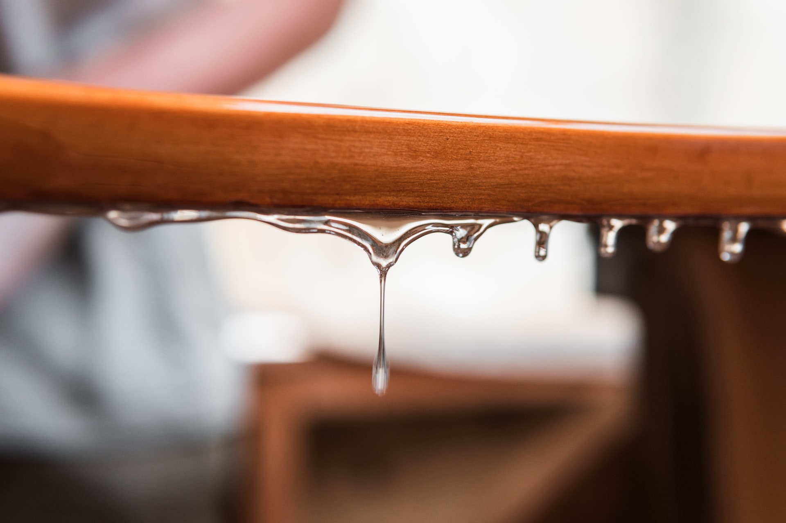

Safety Precautions for Working with Resin

I was recently scared out of my wits when I saw a reckless newbie experimenting with resin so I decided to post this.
“Safety first” should be a general rule for anything, that includes working with resin.
Here is what you ABSOLUTELY need:
1. Gloves
2. Either a well-ventilated workspace or a respirator
If you get resin on your skin NEVER use the following:
1. Varsol
2. Vinegar
3. Alcohol
4. Acetone
You can use the above-mentioned for your materials and workspace; but for your lovely skin, just use soap, even better would be an exfoliant.
If it gets in you eyes, rinse but don’t rub then get yourself to the hospital IMMEDIATELY.
Keep young children away from the area and ensure that your project is unreachable to them.
Additional things you need to know:
1. Even in a well-ventilated area, you can wear an N95 mask if you want to be sure.
2. Don’t wear clothes you’re not yet willing to part with because stray resin will ruin them.
3. Protect your workspace by covering it with a plastic sheet, or any non-stick sheet you might have.
Alright, have fun and don’t die! :D